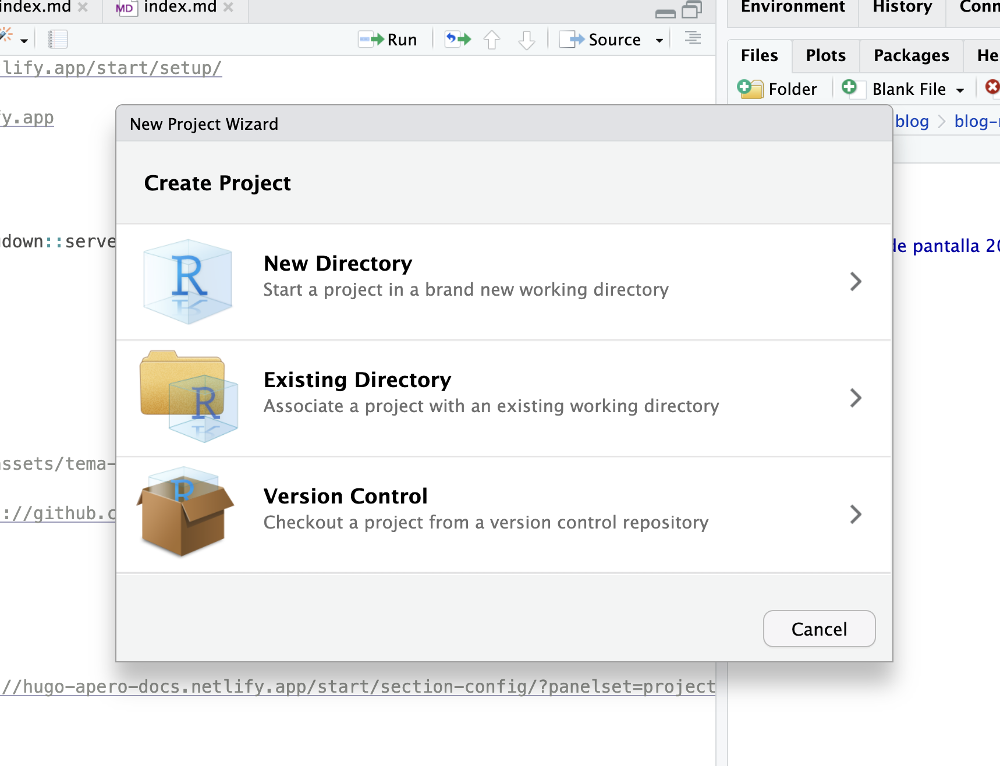
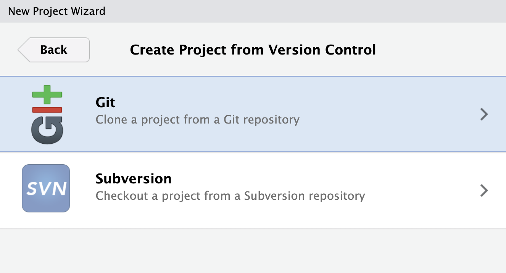
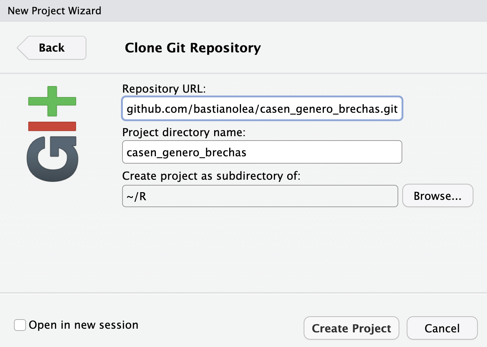
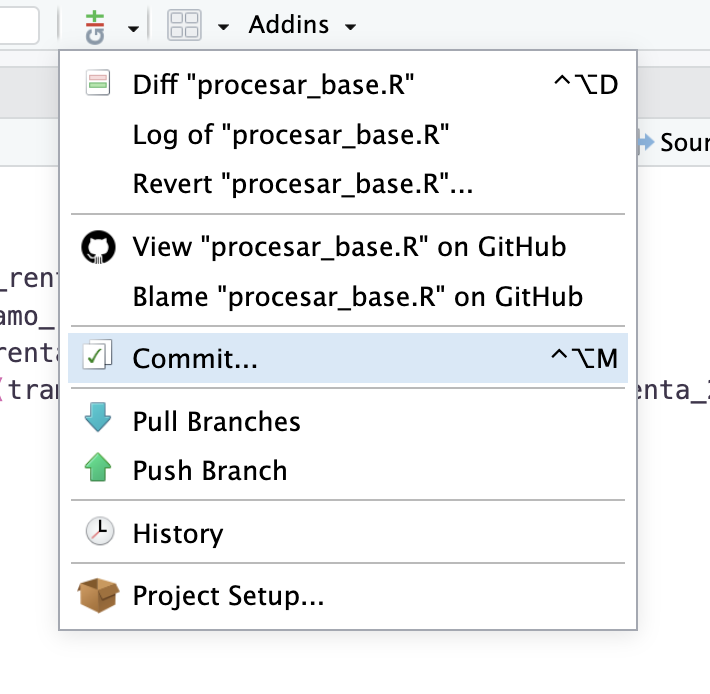
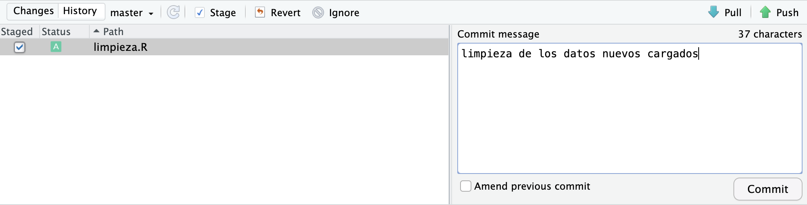

Tutorial: crear un repositorio Git para tu proyecto de R y comparte tu código en GitHub
Por Bastián Olea Herrera en Tutoriales
7/2/2025
En este tutorial aprenderás a empezar a usar Git con tus proyectos de R, mediante la creación de repositorios. Git te permite llevar un registro de las versiones y un control de cambios en tu código, mientras que GitHub te permite subir tus repositorios a un servicio online, en el cual puedes compartir tu código con otras personas, descargar el código de otros, y colaborar en un mismo proyecto.
Git y GitHub
Lo primero es entender bien el software y servicios que vamos a usar. Git es un software de código abierto ampliamente usado, que instalas en tu computador para llevar un control de las versiones de tu código local. Por otro lado, GitHub es una plataforma online donde las personas pueden subir sus repositorios de Git, permitiendo a otros acceder a su código, y contribuir a los repositorios, entre muchas otras funcionalidades.
En este tutorial aprenderemos a realizar las tres tareas más comunes del uso de Git/GitHub en R:
- Clonar un repositorio remoto
- Crear un repositorio local
- Configurar R para conectarte a GitHub
- Subir un repositorio a GitHub
Clonar un repositorio código de R en GitHub
Clonar significa descargar a tu computadora una copia idéntica de un repositorio de código alojado en la web.
Si alguna vez te encuentras con un proyecto de código abierto interesante, participas de una clase de programación que publica sus contenidos en un repositorio, o encuentras un proyecto de análisis de datos que quieras probar o modificar, lo más probable es que estos proyectos estén alojados como repositorios en GitHub.
Por ejemplo, en mi perfil de GitHub tengo más de 50 repositorios públicos de análisis de datos con R que puedes clonar a tu computador.
Para clonar un repositorio de GitHub a tu computador, y así tener todo el código necesario para poder ejecutarlo y explorarlo, sólo necesitas tener RStudio instalado.
Navega al repositorio
El primer paso es navegar al repositorio que te interesa, y encontrar el botón verde que dice Code, en el tendrás que copiar un enlace justo arriba del texto que dice clone using the web URL.

Crea un proyecto de R a partir del repositorio
Con el enlace al repositorio copiado, ve a RStudio y crea un nuevo proyecto. Dentro de las tres opciones que te presenta para crear un nuevo proyecto, elige la tercera, que es para crear un proyecto desde un repositorio de control de versiones:
Luego elige la opción Git:
Finalmente, pega el enlace del repositorio en el primer campo de texto, y ajusta el nombre que le darás y la ubicación donde quieres que se guarde.
Al presionar Crear proyecto, RStudio descargará todo el código y datos del repositorio y los incluirá en el proyecto que creaste. Luego podrás ejecutar el código y navegar en repositorio localmente en tu computador. Recuerda que la mayoría de los repositorios contienen un archivo README.md, en el cual sus autores explican de qué se trata y usualmente incluyen instrucciones, y también un archivo de licencias que especifica qué puedes hacer con el código y que no puedes hacer con él, si es que planeas modificar el código o usarlo para otros fines.
Crear un repositorio local para tu proyecto de R
Si estás trabajando en un proyecto de R, y quieres mantener una suerte de respaldo a medida que vas avanzando en el proyecto, debes usar Git para crear un repositorio local. De esta forma, mantendrás un control de versiones de tu proyecto, y así podrás navegar entre distintas versiones de tu proyecto, por ejemplo, si realizaste un cambio que provocó demasiados problemas y quieres volver a una versión anterior, si borraste algo y quieres recuperarlo, o simplemente si quieres llevar una documentación de tu avance en tu proyecto a través del tiempo.
Instalar Git
El primer paso sería instalar Git en tu computador, aunque varios sistemas operativos ya lo tienen instalado.
Instalar {usethis}
Para muchas de las tareas que involucran usar Git en R, existe un paquete que nos facilita muchísimo el trabajo. {usethis} es un paquete de R que automatiza muchas tareas repetitivas que se hacen al configurar tus proyectos.
Instala {usethis} en R:
install.packages("usethis")
Crear repositorio
Para crear un repositorio, y para cualquier otra oportunidad en la que trabajes con R, debes estar trabajando en un Proyecto de RStudio. Si no estás trabajando dentro de un Proyecto de RStudio, créalo primero.
En tu consola de R, ejecuta usethis::use_git() para crear un repositorio local. La consola te preguntará si deseas commit los archivos actuales. Commit significa hacer una confirmación de que quieres guardar el estado actual de tu código como una versión de tu proyecto. En otras palabras, significa algo así como guardar todo el estado de tu proyecto en el momento actual. Cuando creamos por primera vez un repositorio, hacemos un primer commit de la situación inicial del proyecto.
Hacer commits
A medida que hagamos cambios en el repositorio, vamos a ir haciendo nuevos commits que vayan guardando nuestro progreso. Por ejemplo, si cargas un nuevo conjunto de datos, realizas la limpieza de estos datos en un nuevo script, y quedaste conforme con esta limpieza, sería conveniente crear un nuevo commit que guarde el estado de tu proyecto en este nuevo momento en el que avanzaste en tus tareas.
Para hacer un nuevo commit, puedes volver a ejecutar usethis::use_git(), pero no es la forma más ideal de hacerlo. Lo ideal sería, o bien usar le panel de Git de RStudio, que te permite usar Git de forma interactiva en tu sesión, o bien, usar Git desde la línea de comandos o Terminal de tu computador.
Hacer commit desde el panel de Git de RStudio
En la parte superior de RStudio, presiona el icono de Git y elige la opción commit: 
Se abrirá una nueva ventana donde aparecerán los archivos y datos nuevos en tu proyecto desde la última vez que hiciste commit.
Para todos los archivos nuevos que desees incluir en este guardado, debes seleccionar la casilla de cada uno para hacer el stage (considerarlos para el commit), y luego tienes que escribir un mensaje que describa cuál es tu nuevo cambio. Este mensaje servirá para que tú puedas identificar en el futuro qué cambios contiene este commit. Luego presiona el botón commit.
Hacer commit desde la terminal
En la pestaña de Terminal de RStudio también puedes interactuar con Git, de manera más directa.
El comando git add . agrega a todos los nuevos archivos y archivos modificados a la fase de staging, que significa que son archivos considerados para el commit, y luego el comando git commit -m "mensaje" te permite crear el commit. Debes poner entre comillas el mensaje asociado al commit. Si en alguna momento tienes alguna duda, puedes ejecutar git status para conocer el estado de tu repositorio.
Configurar GitHub en R
Lo primero que tienes que hacer es darle permiso a tu computador para conectarse a tu cuenta de GitHub.
Lógicamente, el primer paso es crearse una cuenta en el servicio de GitHub.
En R, ejecuta el comando usethis::create_github_token(), que abrirá una ventana de Github. En esta ventana se podrán crear tokens para tu cuenta.
Un token es una especie de contraseña única y secreta de un solo uso, que te permite conectar tu cuenta a un computador sin tener que entregar tu clave de tu cuenta de GitHub, volviéndolo mucho más seguro.
Crea el token que necesitas, y copia del código secreto. Recuerda que este código solamente podrás verlo una vez, así que procura realizar el siguiente paso en seguida.
Ejecuta el comando gitcreds::gitcreds_set() y entrégale el token que copiaste. De esta forma queda enlazada tu cuenta con tu computador.
Configurar tu cuenta
Solamente queda un último paso de configuración, que es guardar la información básica de tu cuenta en R. Ejecuta el comando use_git_config(user.name = "usuario", user.email = "correo"), indicando en sus argumentos tu nombre de usuario y tu correo de tu cuenta GitHub.
Crear un repositorio remoto en GitHub para tu proyecto de R
Si ya tienes un proyecto de RStudio con un repositorio local asociado, y quieres compartir este código en Internet, ya sea para respaldarlo o para que otras personas puedan verlo y utilizarlo, puedes crear un repositorio remoto en GitHub que almacene una copia enlazada de tu código. A medida que vayas actualizando tu código, vas a ir actualizando también el repositorio remoto, por lo que será una especie de espejo de tu código local.
En tu proyecto de RStudio, ejecuta el comando usethis::use_github() para que automáticamente se cree un repositorio remoto conectado a tu repositorio local, y se suban los datos y código de tu repositorio local a GitHub. El proceso es automático, y debería abrirse una ventana de tu navegador con tu nuevo repositorio de GitHub.
Puedes compartir el enlace a este repositorio para que otras personas puedan ver tu código, clonarlo en sus computadoras, y colaborar contigo. Es recomendable crear un archivo readme.md en tu proyecto para que aparezca como una descripción de tu repositorio GitHub, así como ponerle una descripción a tu repositorio de GitHub para que otras personas puedan entender de qué se.
Recuerda que los repositorios en GitHub son por defecto públicos y visibles para las demás personas. Si necesitas respaldar, almacenar o compartir código y o datos privados, crea un repositorio privado con el comando usethis::use_github(private = TRUE). En un repositorio privado, solamente tus computadoras autorizadas y personas que tú autorices podrán acceder a tu código.
Si te sirvió este tutorial, por favor considera hacerme una pequeña donación para poder tomarme un cafecito mientras escribo el siguiente tutorial 🥺
Recursos
El libro Happy Git with R detalla todos los pasos necesarios para poder usar Git con R, incluyendo soluciones a problemas comunes.